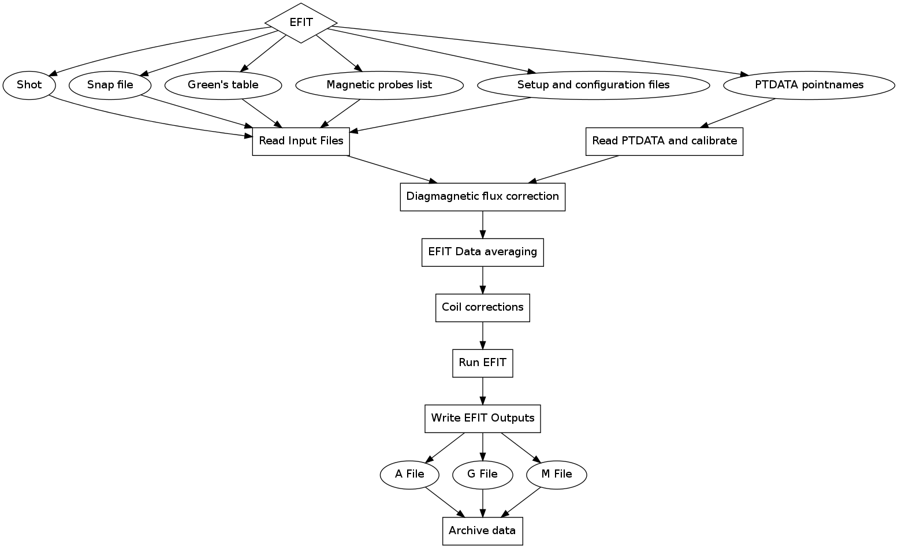

This file uses markdown light weight markup language. A good
reference explains the basics. This file may be
converted to html with
markdown api_doc.md > api_doc.htmlHere is an example workflow image generated with {: .scenter}
{: .scenter}
The syntax, {: .scenter} is a looks a bit complicated,
but is just the optional text only view, the image and mouse over text and style. We could just use(./workflow.png) if we didnt want to style it.
This image is provided by the webserver and can be retrieved with
GET <web_server>/graph/<work_uid>/pngor explicitly:
curl -k --cert ../MPO\ Demo\ User.pem https://mpo.gat.com/mpo/graph/<work_uid>/png > workflow.pngSome support routes are
workflowdataobjectactivityThis html file was generated with python md_css_generator.py example.md mpo_doc.css example.html and
requires markdown to be installed: pip install markdown.